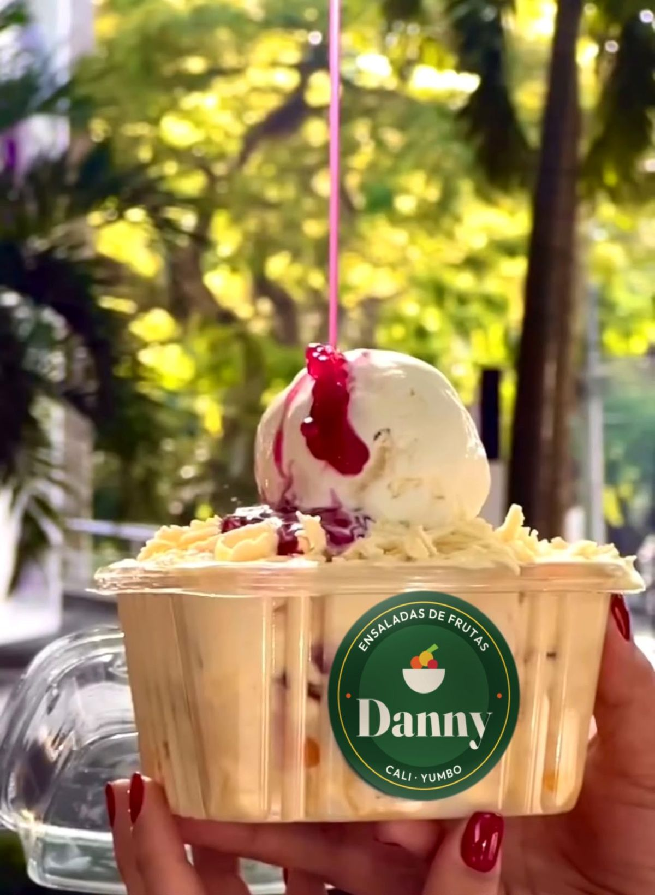
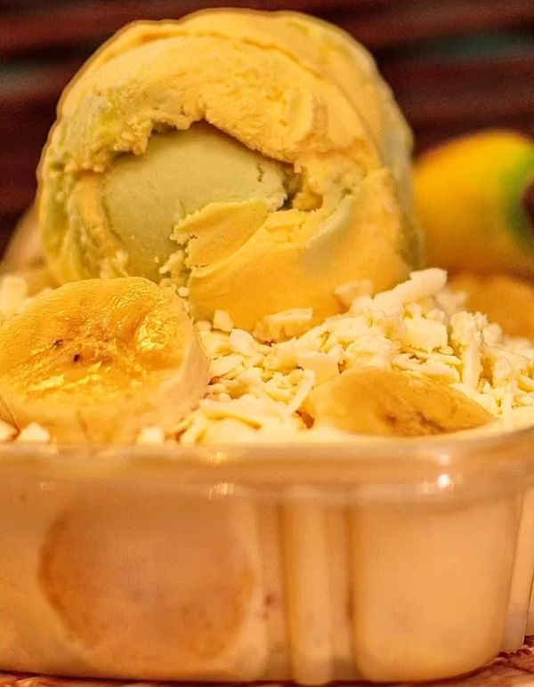
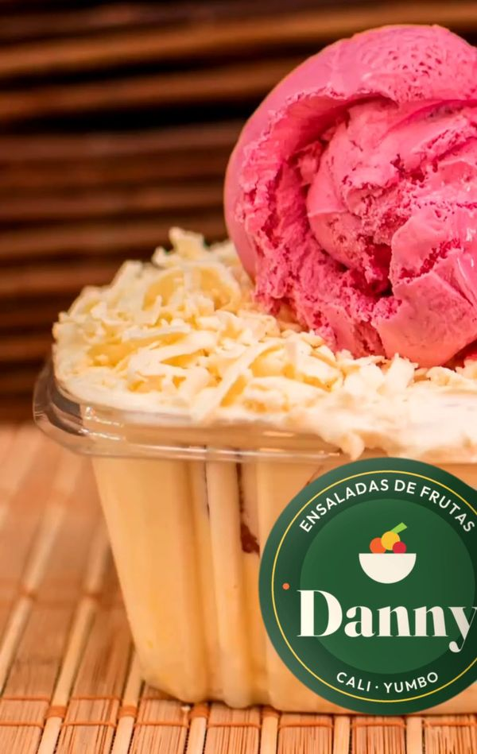
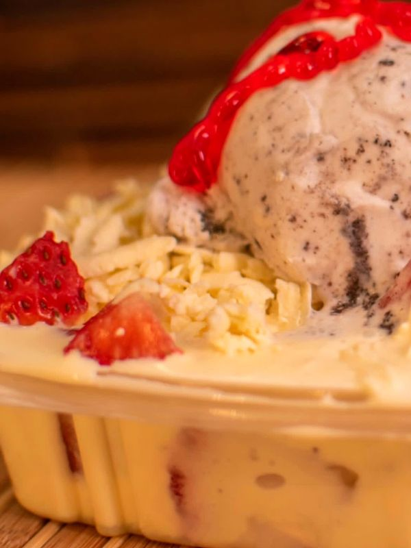

Ensaladas de frutas · Cali y Yumbo
Naturalmente a tu gusto
Ensaladas de frutas que armas como te gusta, con aderezos de fruta que no empalagan. La pides en un minuto desde tu celular.
- Tú eliges las frutas
- Aderezos de fruta
- Domicilio en Cali y Yumbo

- La armas a tu gustoDinos qué frutas quieres y cuáles no.
- Aderezos que no empalaganHechos de fruta, no tapan el sabor.
- Hablas con quien la preparaAtención directa, sin aplicaciones.
Para empezar
Tres ideas, mil combinaciones
Escoge una idea como punto de partida y ajústala a tu gusto. Las frutas cambian según la temporada, así que al pedir te confirmamos opciones y precio.
-

Tropical
Bien frutal y dulce por la misma fruta. Para cuando quieres algo fresco a media mañana.
-

Cremosa
Con más aderezo de fruta. La favorita para el antojo de la tarde.
-

A tu manera
Tú nos dices qué frutas te gustan y cuáles prefieres dejar por fuera. Nosotros la armamos.
Míralo en 25 segundos
Así armas tu ensalada
4 Tu mensaje está listo
Sin complicaciones
Pedir es así de fácil
Elige
Una de nuestras ideas o la tuya propia, con o sin aderezo.
Confirma por WhatsApp
Te respondemos con las frutas del día, el precio y el costo del domicilio a tu dirección.
Recíbela
Te la llevamos en Cali o Yumbo. La cobertura exacta se confirma en el chat.
Síguenos
Antojos todos los días
En nuestras redes publicamos las frutas de temporada, combinaciones nuevas y los pedidos que van saliendo.
Antes de pedir
Preguntas frecuentes
¿No encuentras tu respuesta? Escríbenos y te contestamos.
¿A dónde llevan las ensaladas?
Atendemos en Cali y Yumbo. Escríbenos con tu barrio y te confirmamos si llegamos y cuánto cuesta el domicilio.
¿Cuánto cuesta una ensalada?
El precio depende de la combinación y se confirma en el chat antes de que pagues. Así no te llevas sorpresas al final.
¿Puedo cambiar las frutas?
Sí. Dinos qué te gusta y qué no, y la armamos con la fruta disponible ese día.
¿Los aderezos son muy dulces?
No. Son aderezos de fruta pensados para acompañar, no para tapar el sabor de la fruta.
¿Con cuánta anticipación debo pedir?
Depende del día y de la cantidad. Escríbenos y te decimos el tiempo de entrega.
¿Cómo la conservo?
Lo mejor es comerla pronto. Si vas a esperar, mantenla en la nevera.
¿Este sitio recibe pedidos reales?
Todavía no. Es el prototipo del sitio de Ensaladas Danny, desarrollado como proyecto académico. Los botones muestran una demostración.
¿Se te antojó?
Escríbenos y armamos tu ensalada.